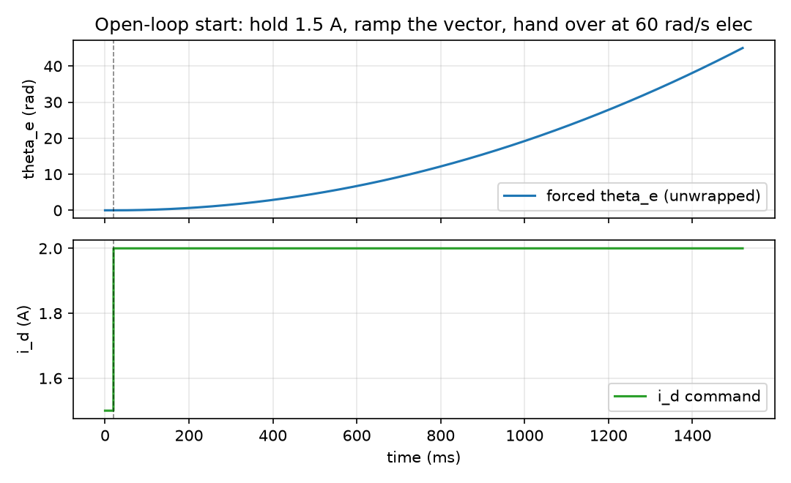

1.1.1. Bringing a sensorless machine up
The task: the axis has no position sensor and no idea where the rotor is. Get it spinning anyway, to a speed at which the observer can take over, and hand over cleanly.
1.1.1.1. What you need
foc/core/startup.hpp-- the sequence: hold the rotor at a known angle, drag the forced vector up with a known acceleration, stop at a hand-over speed.foc/core/alignment.hpp-- the same idea without the pull: hold and stop. Right when the angle is measured after the fact rather than inferred.foc/core/observer/blended_observer.hpp-- what takes over at the end, and why the hand-over happens at a speed rather than at a time.foc/core/stall_start.hpp-- what to do when the rotor never came with the vector: a torque recipe for breaking the axis loose before trying again.
1.1.1.2. A minimal program
docs/doxygen/dox/demos/startup-sensorless.cxx steps the sequence at the control
rate and prints every state change. The same file produces this page's figure. It is
included below from the repository rather than copied into the page, so the listing here
is the file that ran.
1// Startup -- bringing a sensorless machine up: hold the rotor, drag the vector
2// up to a speed, hand over. No plant and no hardware: the sequence itself is a
3// policy, and what it decides (angle, current, when it is finished) is what this
4// program prints.
5//
6// Build it the way the `demo` gate does -- the example calls into the library, so the
7// sources are part of the command, and `-Iinclude` alone fails at the link. A renamed
8// source turns that gate red instead of leaving a stale instruction here:
9// g++ -std=c++17 -fno-exceptions -fno-rtti -Wall -Wextra -Werror -Iinclude
10// docs/doxygen/dox/demos/startup-sensorless.cxx src/core/*.cpp
11// src/core/observer/*.cpp src/motor/*.cpp src/driver/*.cpp src/api/foc_api.c
12// src/api/bridge.cpp src/version.c
13// -o /tmp/startup-sensorless
14//
15// With `--csv <path>` it writes the same run as rows instead of a table; that is
16// how `docs/demos/make_figures.py` draws this example's figure, so the figure and
17// the snippet are one program.
18//
19// 起动 —— 无感起转：按住转子、把矢量拖到某个转速、交出控制权。没有硬件也没有被控对象：
20// 这个序列本身就是一条策略，它决定了什么（角度、电流、什么时候结束）就是这个程序打印的东西。
21// 带 `--csv <path>` 时把同一次运行写成行而不是表；`docs/demos/make_figures.py` 正是这样画本片
22// 的图，于是图与片段是同一个程序。
23
24#include <cmath>
25#include <cstdio>
26#include <cstring>
27
28#include <foc/core/startup.hpp>
29#include <foc/core/types.hpp>
30
31namespace {
32
33constexpr float kTwoPi = 6.28318530718F;
34constexpr float kDtS = 5.0e-5F; // 20 kHz control loop
35constexpr std::uint32_t kPolePairs = 7U;
36
37/// The state as a short word. A name table, not a second state machine: every
38/// entry is one enumerator of `StartupState`.
39/// 状态的名字表，不是第二台状态机：每一项都是 `StartupState` 的一个枚举值。
40auto state_name(foc::core::StartupState state) noexcept -> const char* {
41 switch (state) {
42 case foc::core::StartupState::Idle:
43 return "idle";
44 case foc::core::StartupState::Align:
45 return "align";
46 case foc::core::StartupState::Pull:
47 return "pull";
48 case foc::core::StartupState::Done:
49 return "done";
50 case foc::core::StartupState::Failed:
51 return "failed";
52 }
53 return "?";
54}
55
56/// The recipe, named once. Everything here is a statement about the machine and
57/// the load: the current that holds the rotor still, how long that is held, the
58/// current while dragging, how fast the vector accelerates, and the speed at
59/// which the observer is expected to take over. The routine validates the
60/// combination -- see the two refusals below.
61/// 配方只写一次。这里每一项都是关于机器与负载的陈述：按住转子所需的电流、按多久、拖动时的
62/// 电流、矢量加速多快、以及在哪个转速上应当交给观测器。这个组合由例行自己校验——见下面
63/// 两处拒绝。
64auto recipe() noexcept -> foc::core::StartupConfig {
65 foc::core::StartupConfig config{};
66 config.align_current_a = 1.5F;
67 config.align_hold_s = 0.02F;
68 config.pull_current_a = 2.0F;
69 config.pull_accel_rad_s2 = 40.0F;
70 config.handover_speed_rad_s = 60.0F;
71 return config;
72}
73
74} // namespace
75
76auto main(int argc, char** argv) -> int {
77 const char* csv_path = nullptr;
78 if (argc == 3 && std::strcmp(argv[1], "--csv") == 0) {
79 csv_path = argv[2];
80 } else if (argc != 1) {
81 std::fprintf(stderr, "usage: %s [--csv <path>]\n", argv[0]);
82 return 2;
83 }
84
85 // A recipe the routine will not run. The refusal is the point: a hand-over
86 // speed of zero means "no observer will ever take over", and the routine
87 // says so at validate() rather than starting and stalling.
88 // 一个例行不会执行的配方。这次拒绝才是要点：交接转速为零意味着"永远不会有人接管"，
89 // 例行在 validate() 处就说清楚，而不是启动了再卡住。
90 foc::core::StartupConfig broken = recipe();
91 broken.handover_speed_rad_s = 0.0F;
92 const foc::core::StartupRoutine refused(broken);
93
94 foc::core::StartupRoutine startup(recipe());
95 const bool begun = startup.begin(kPolePairs);
96
97 // Step until the routine says it is finished, or until the clock runs out.
98 // The timeout is not a parameter of the library; it is this program refusing
99 // to loop forever if the recipe and the machine disagree.
100 // 一直步进到例行说结束，或者时间用完。超时不是库的参数；是这个程序在配方与机器不合时
101 // 拒绝永远循环下去。
102 const float limit_s = 3.0F;
103 float t_s = 0.0F;
104 float previous_handover_e = -1.0F;
105 foc::core::AlignOutput out{};
106 int rows = 0;
107
108 FILE* csv = nullptr;
109 if (csv_path != nullptr) {
110 csv = std::fopen(csv_path, "w");
111 if (csv == nullptr) {
112 std::perror("fopen");
113 return 1;
114 }
115 std::fprintf(csv, "t_s,state,id_a,theta_e_rad,handover_e_rad_s\n");
116 } else {
117 std::printf("recipe refused: validate() = %d (0 = Ok, -1 = Param)\n", static_cast<int>(refused.validate()));
118 std::printf("begin(%u pole pairs) = %s\n\n", static_cast<unsigned>(kPolePairs), begun ? "true" : "false");
119 std::printf("%8s %-7s %8s %10s %12s\n", "t (ms)", "state", "id (A)", "theta_e (rad)", "hand-over (rad/s)");
120 }
121
122 while (t_s < limit_s) {
123 // The measured mechanical angle is an input, and during the open-loop
124 // part there is nothing to measure it with -- that is what "open loop"
125 // means. The routine does not use it to decide anything before the
126 // hand-over; it is there for the policy that owns the axis afterwards.
127 // 实测机械角是一个输入，而开环那一段没有东西能测它——"开环"就是这个意思。例行在交接
128 // 之前不用它做任何决定；它是给之后拥有这条轴的策略用的。
129 out = startup.step(kDtS, 0.0F);
130 t_s += kDtS;
131 const bool changed = (out.handover_speed_e_rad_s != previous_handover_e);
132 previous_handover_e = out.handover_speed_e_rad_s;
133 if (csv != nullptr) {
134 std::fprintf(csv, "%.6f,%s,%.6f,%.6f,%.6f\n", static_cast<double>(t_s), state_name(startup.state()),
135 static_cast<double>(out.id_a), static_cast<double>(out.theta_e_rad),
136 static_cast<double>(out.handover_speed_e_rad_s));
137 } else if (changed || (rows % 40) == 0) {
138 std::printf("%8.2f %-7s %8.3f %10.4f %12.2f\n", static_cast<double>(1000.0F * t_s),
139 state_name(startup.state()), static_cast<double>(out.id_a),
140 static_cast<double>(out.theta_e_rad), static_cast<double>(out.handover_speed_e_rad_s));
141 }
142 ++rows;
143 if (out.finished) {
144 break;
145 }
146 }
147
148 if (csv != nullptr) {
149 std::fclose(csv);
150 std::printf("wrote %s (%d rows, %.3f s)\n", csv_path, rows, static_cast<double>(t_s));
151 return out.finished ? 0 : 1;
152 }
153
154 // What the caller does with `theta_e_rad` when the routine finishes: the
155 // observer is seeded with it, and `handover_speed_e_rad_s` is what the
156 // hand-over check compares against afterwards. Printing both makes the
157 // contract visible instead of implied.
158 // 例行结束时调用方拿 `theta_e_rad` 做什么：观测器用它播种，而 `handover_speed_e_rad_s`
159 // 是之后交接检查用来比较的量。两个都打印出来，契约就是看得见的而不是隐含的。
160 std::printf("\nfinished=%s state=%s theta_e=%.4f rad (%.2f deg) hand-over=%.2f rad/s (%.2f mech)\n",
161 out.finished ? "true" : "false", state_name(startup.state()), static_cast<double>(out.theta_e_rad),
162 static_cast<double>(out.theta_e_rad * 180.0F / kTwoPi), static_cast<double>(out.handover_speed_e_rad_s),
163 static_cast<double>(out.handover_speed_e_rad_s / static_cast<float>(kPolePairs)));
164 return out.finished ? 0 : 1;
165}
Three things in its output are worth reading slowly:
the recipe with a hand-over speed of zero is refused by
validate(), not started and abandoned;during the hold the current is constant and the forced angle does not move -- that is the point of the hold, and a shorter hold than the rotor's settling time is the most common way to make this sequence look like it does not work;
finishedmeans the hand-over speed was reached. It does not mean the rotor came with the vector. That judgement needs a speed measurement, and it lives one window later in the motor's hand-over check.
1.1.1.3. Where the numbers come from
Every field of the recipe is a statement about the load, not about the machine, and none of them is derivable from the nameplate:
the hold current has to produce enough torque to move the rotor to the forced angle against friction and gravity, and no more;
the hold time has to outlast the rotor's settling at that torque;
the pull acceleration has to stay under what the rotor can follow at that current, or the vector simply slides past it -- the rotor stays where it was and everything looks normal;
the hand-over speed has to be above where the observer works and below where the pull can actually reach.
The law that ties the acceleration, the current and the inertia is the slip law
on foc/core/startup.hpp's claim row; the numbers it produces for a specific
machine are in that row's evidence, not on this page.
1.1.1.4. How it goes wrong
The rotor never followed, and nothing says so. The vector ramps, the angle advances,
finishedis true, and the axis is stationary. Nothing on this page catches that;stall_startand the hand-over check exist because of it. Treatfinishedas "the sequence ran", never as "the motor is turning".Hand-over before the observer converged. The observer needs a window of speed to converge, so the hand-over speed is a floor, not a target to minimise. Handing over early lands the axis on a wrong angle with full current, which is the most damaging failure in this list.
Acceleration the rotor cannot follow. Every increment of the pull acceleration is a smaller margin between "dragged" and "slipped". The failure is silent: slip does not throw, it just stops transferring torque.
Handing over without seeding the observer. The observer's own state is not the angle the sequence just produced. Seed both angle and speed, or the first moments after hand-over are spent as error.
1.1.1.5. Evidence
Four claim rows cover this page -- foc/core/startup.hpp,
foc/core/alignment.hpp, foc/core/observer/blended_observer.hpp and
foc/core/stall_start.hpp -- and the level this page may state is the minimum
of those four. The levels themselves are read from the claim table in the
project README.md.
What this page does not claim: the slip amplitude a given machine will see. That is set by the initial rotor-to-vector mismatch rather than by the ramp, so a start that begins badly misaligned begins badly whatever the ramp does -- the ramp's own claim is that it does not add to it.
1.1.1.6. Figure


Figure 1.1 the forced angle (unwrapped) and the current the recipe asks for: a flat hold, a dashed line where the pull starts, then the acceleration parabola
The figure is produced by docs/demos/make_figures.py from this page's own
example, so the snippet and the curve are one translation unit. What it does
not show is a rotor: there is no plant in this program, so the angle is the
one the routine commanded. Whether the rotor followed is exactly the question
this figure cannot answer -- see the first failure mode above.